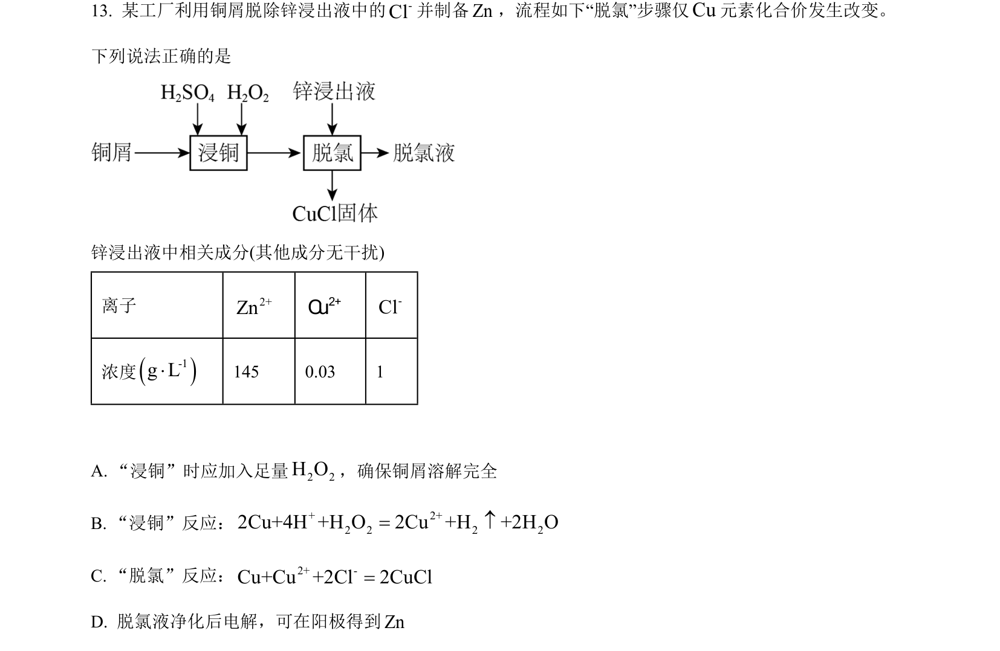
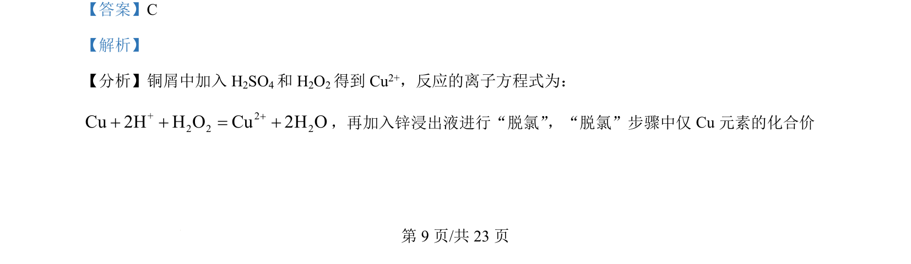
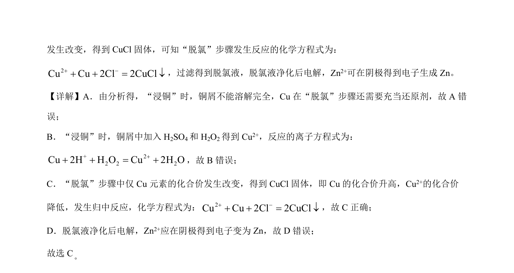

2024-辽宁-13
吉林2024卷辽宁不分题13题型填空难中
考点：离子反应 氧化还原反应 电解原理
题面

摘要
该题考查铜回收工艺流程中离子方程式书写、氧化还原反应及电解原理的正误判断
关联考点
答案与解析


📄 原 PDF 第 9 页：素材/真题/吉林/2008-2024·（吉林）化学高考真题/2024年高考化学试卷（辽宁）（解析卷）.pdf
题干文本
- 某工厂利用铜屑脱除锌浸出液中的-Cl并制备Zn，流程如下“脱氯”步骤仅Cu元素化合价发生改变。
下列说法正确的是
锌浸出液中相关成分(其他成分无干扰)
离子 2+Zn2+C u-Cl
浓度()-1g L×145 0.03 1
A. “浸铜”时应加入足量2 2H O，确保铜屑溶解完全
B. “浸铜”反应： + 2+2 2 2 22Cu+4H +H O 2Cu +H +2H O=
C. “脱氯”反应： 2+ -Cu+Cu +2Cl 2CuCl=
D. 脱氯液净化后电解，可在阳极得到Zn
解析文本
【答案】C
【解析】
【分析】铜屑中加入 H2SO4和 H2O2得到 Cu2+，反应的离子方程式为：
+ 22 2 2Cu 2H H O Cu 2H O++ + = +，再加入锌浸出液进行“脱氯”，“脱氯”步骤中仅Cu元素的化合价
的